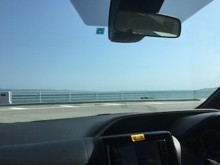
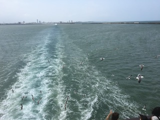
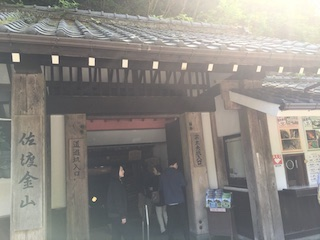
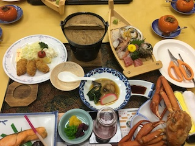
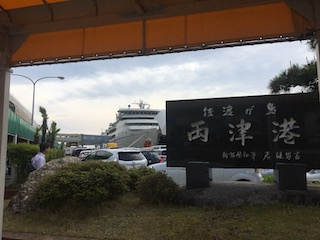

やったこと（感想・考察）
２泊３日 新潟旅行 with 家族
１日目 車で１０時間以上かけて新潟へ 運転してないけど心も体もクタクタ ホテルに着くなり即就寝

２日目
 朝早く起きてフェリーに乗り佐渡島へ 思ってたより都会で驚き  佐渡金山に行ったりたらい舟に乗ったり楽しかった  夜は海鮮づくしのご飯 蟹が美味しかった
３日目
 朝フェリーに乗って新潟に戻ってきて恐怖の帰り道 お昼に牛カツ食べて１０時間かけて大阪帰宅 みんな顔が死んでました